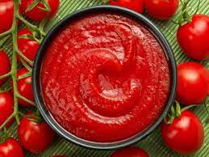

Receta de salsa de tomate para pasticho

Salsa de Tomate
Ingredientes
- 4 unidades de tomate
- 1/2 unidad de pimentón rojo
- 1/2 unidad de cebolla
- 2 dientes de ajo
- 350 gramos de tomate frito
- 1 cucharada sopera de Oregáno
- 1 pizca de sal
- 1 cucharada sopera de comino
Cómo hacer la salsa de tomate para lasaña
- Para hacer esta salsa roja lo primero que debemos hacer
es picar el tomate en cuadritos, este corte tambien es
conocido como Brunoise.
- De la misma forma, corta también el pimentón y los ajos
puedes filetearlos.
- A continuación, corta la cebolla también finamente.
Recuerda que para evitar que la cebolla te haga llorar,
debes usar un cuchillo bien afilado y separar un poco la tabla
de cortar del cuerpo
- Calienta un chorrito de aceite en una sartén amplia y haz
un sofrito con todos los ingredientes. Reserva aparte un
puñado de pimentón.
- Cuando la cebolla empiece a cambiar de color añade
el orégano, el comino y la sal. Revuelve todo bien
y continua con el sofrito unos minutos más
- Si estas pensando hacer una lasaña, te recomiendo que reserves
un poco de este sofrito para hacer la carne. Para continuar con
la salsa de tomate, el siguiente paso será licuar el sofrito
con el resto del pimentón y el tomate frito.
- Lleva la salsa, que debe tener un aspecto homogéneo, a una
olla y cocina a fuego medio removiendo con una cuchara de madera
- Comprueba el sabor y corrige la sazón si es necesario. Si sientes
la salsa un poco ácida puedes añadir azúcar. Deja que reduzca
un poco y ya estará lista la salsa de tomate para lasaña
.Utilízala para la elaboración de una buena lasaña
de carne o cualquier otro plato de pasta al horno.